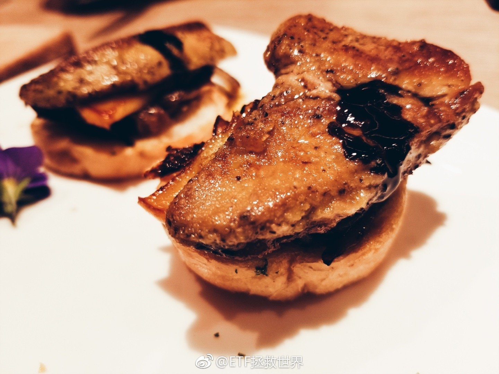
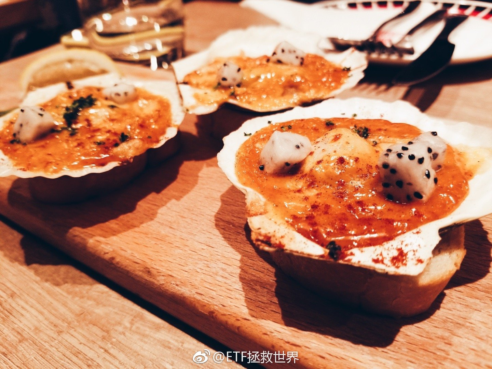

回复@魔魔O:包子也是另一种馒头，加了点馅而已…//@魔魔O:回复@ETF拯救世界:焦糖布丁不就是另一种形式的蒸蛋，加了牛奶和糖而已@ETF拯救世界:有人希望你倒霉你就要生活的更好才行啊。 
回复@丁小佳的秘密基地:如果骂人不需要理由，他不是在浪费自己时间吗，不是在增加自己的业障吗，不是在增加自己的倒霉几率吗。为什么要干这种百害无一利的事？不理解//@丁小佳的秘密基地:为什么你会觉得骂人一定需要一个有逻辑的理由呢???@ETF拯救世界:又有单日售罄的百亿基金进来给你抬轿子了。一句话表达你的感受：
回复@墨白ts:晒一晒。我非常不理解的是，我到底做什么说什么了要被这些人这么骂？到底为什么。//@墨白ts:然后你被抬进了棺材@ETF拯救世界:又有单日售罄的百亿基金进来给你抬轿子了。一句话表达你的感受：
回复@V-EvanChen:还没到年底呢。继续看好戏。//@V-EvanChen:历史性的一天。老大牛逼。 谁能想到呢？@ETF拯救世界:我立个flag。2019年A股极大极大概率收红。不投机取巧，我说的是绝大多数指数。甚至，有可能涨幅不会太小。当然不排除中间继续挖坑，但年底看，形势一片大好。不是小好，是大好。